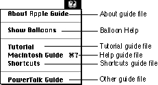
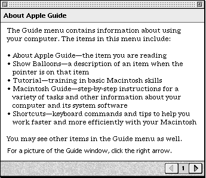
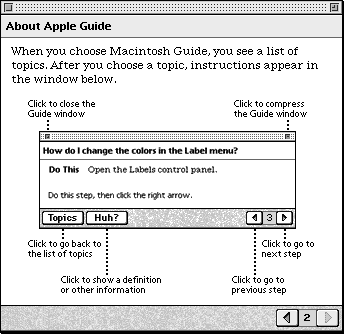
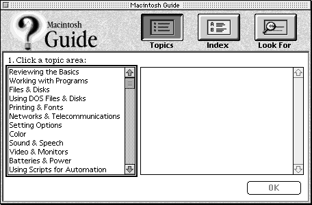
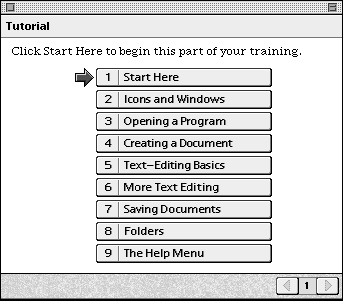
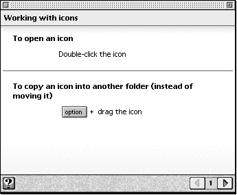

Legacy Document
Important: The information in this document is obsolete and should not be used for new development.
Important: The information in this document is obsolete and should not be used for new development.


Designing Guide Files
A guide file is a single file containing help content that conforms to one of five guide file types supported by Apple Guide. Once you have developed a guide file, you can create a special guide file (known as a mixin) to add to or modify its contents.Developing a guide file generally requires knowledge of instructional design, scripting with Guide Script, and building and testing guide files with Guide Maker. It also requires familiarity with the design information in this chapter. To integrate a guide file into an application requires knowledge of the Apple Guide application programming interface (API). You might have all the skills and background to develop a guide file yourself, or you might work with a team that includes instructional designers, scriptors, and developers.
To develop a guide file, you first design its help content in hard-copy form using either a flowchart or a storyboard. This process includes planning the guide file topic areas, topics, and associated panels, and determining the required context checks, which are functions you use to have Apple Guide display help instructions specific to the user's environment. You should always verify as soon as possible that it is programmatically possible to create all context checks; if not, return to your guide file design and revise any affected panels.
Next, you describe the guide file's content in help source files--files that contain Guide Script commands that define the look, content, and navigation path of all panels in your guide file. You can create help source files in any word processor that stores text as
'TEXT'files (or for which you have an XTND translator). Then you use the Guide Maker application to build--that is, compile--the help source files into a guide file and perform testing. At this stage, you can also have users test your guide file to verify its clarity and ease of use. You also need to write the code for any context checks your guide file uses. And, if you choose to integrate the guide file into your application, use the Apple Guide API to do so.
This section describes the content, naming, and Help menu location of each type of guide file. It also discusses how to modify an existing guide file's contents using a Mixin guide file. For additional details on producing guide files, see Appendix D.
- Note
- To have your guide file appear in the Help menu, place it in the same folder as its corresponding application (or place an alias to the guide file in the folder containing the application).

Using Guide File Types
You should create guide files that conform to Apple Guide's five guide file types: About, Tutorial, Help, Shortcuts, and Other. Each guide file type has a particular focus, content, naming convention, and Help menu location.You should follow these suggestions for each guide file type's content and name. Note that the guide file name is the item name in the Help menu.
You can use all five guide file types or only a few of them. You can also use more than one Other guide file. For example, you might have several Other guide files but no Shortcuts guide file. Note, however, that you should always include an About guide file, even if you use only one other guide file type.
- About. Use an About guide file to introduce users to all available help systems in your application. Its name should include the application name preceded by the word About and followed by the word Guide; for example, About SurfWriter Guide.
- Tutorial. Use a Tutorial guide file to lead users through basic features of your application. You should name it Tutorial.
- Help. Use a Help guide file to provide users main information in your help system through a range of task-oriented information about your application. Its name should include the application name followed by the word Guide; for example, SurfWriter Guide.
- Shortcuts. Use a Shortcuts guide file to provide condensed reference material similar to that found on a quick reference card. You should name it Shortcuts.
- Other. Use an Other guide file for highly advanced or specialized information that does not conform to the content conventions of the other four guide types. Or, if you're not the developer of an application, use the Other guide file to ensure that your guide file appears in the Help menu (see the next section for details). The name you choose should indicate the type of help your application provides; for example, SurfWriter Quick Reference.
Showing Guide Files in the Help Menu
Each guide file type that is available to an application can appear as an item in its Help menu, along with Show/Hide Balloons and any other application help systems. (For information on making a guide file available to an application, see the note on page 2-20.) For example, Figure 2-1 shows the Help menu of the Finder displaying the system software guide files as well as the Show Balloons menu item. Note that PowerTalk Guide is of the guide file type Other.Figure 2-1 A Help menu showing the system software guide files and Balloon Help

The guide file type determines where it appears in the Help Menu, with certain guide file types appearing closer to the top of the Help menu than others. Specifically, the Other guide file type appears at the bottom of the Help menu and the About guide file type appears at the top of the Help menu, followed by Show/Hide Balloons and the Tutorial, Help, and Shortcuts guide files.
The Help menu displays only one guide file for each of the About, Tutorial, Help, and Shortcuts types. However, there may be multiple guide files for any of these types. When there are, the Help menu displays the guide file that matches all conditions specified by <App Creator>, <Gestalt>, and <Mixin> commands and that comes first alphabetically. These guide files are generally reserved for the developer of the application.
In contrast, the Help menu alphabetically displays all guide files of type Other that match all conditions specified by <App Creator>, <Gestalt>, and <Mixin> commands. To ensure that the guide file appears in the Help menu, use an Other guide file to provide help for an application that you did not develop.
- Note
- You can assign a keyboard shortcut to a guide file. If you do, Apple Guide displays it next to the guide file name in the Help menu. Guide files of type Help automatically open if the user presses the Command-Shift-/combination (which maps to Command-Shift-? key combination on U.S. keyboards) or the Help key on the Apple Extended keyboard, even if you assign no keyboard shortcuts.
Designing About Guide Files
You should use an About guide file to describe the purpose and contents of each help item that appears in the Help Menu--including those that are not Apple Guide guide files--and provide general guidelines for using the help system. The About guide file is typically the first exposure that users have to your help system and the place they are likely to return to if they cannot find certain help information. You can also use this guide file to acknowledge individuals who designed or contributed to the help system. The About guide file should not include information that pertains directly to the application itself.You should always include an About guide file with your guide files, even if you create only one other guide file. If you don't include one, a default dialog box appears instead.
An About guide file should be brief and can generally use a Simple Access window. For more information, see "Designing a Simple Access Window" on page 2-34. The first panel of an About guide file should identify each guide file in the menu as well as Balloon Help. Figure 2-2 shows the access window for About Apple Guide.
Figure 2-2 The access window for About Apple Guide

The subsequent panels in the guide file can provide detailed explanation of each guide file and the rest of the help system. Figure 2-3 shows a panel in About Apple Guide that describes how to use Macintosh Guide.
Figure 2-3 A panel in About Apple Guide

Designing Help Guide Files
You should use a Help guide file to provide the main information for your help system. It should consist primarily of step-by-step instructions that guide users through a range of tasks in your application. (Where programmatically possible, you can also have Apple Guide perform certain tasks for the user.) You can also use this guide file to explain key concepts, define terminology, and address problems that users can encounter using your application. Your Help guide file should generally answer three categories of user inquiry:
For many users, the Help guide file is the one they turn to first when they encounter a problem during their work. If an application provides a Help guide file, it is the one that automatically appears when the user invokes help. For example, if you use the Help key in the Finder, Macintosh Guide automatically opens.
- How do I do this task? (For example, how do I save my file?)
- Why can't I do this action? (For example, why can't I print my file?)
- Define this object or concept. (For example, define dithering).
You should always use the Full Access window for a Help guide file. It provides random access of information, which is more appropriate for the extent and diversity of its topics. It also provides three powerful and varied searching methods that meet different user needs. Figure 2-4 shows the Full Access window for Macintosh Guide.
Figure 2-4 The Full Access window for Macintosh Guide

For more information about this window and the random access method, see "Designing Access Windows" beginning on page 2-27.
Designing Tutorial Guide Files
You should use a Tutorial guide file to lead users through basic use of your application. It is similar to the "quick start sections" commonly found in user documentation. Unlike the Help guide file, which addresses a diverse range of learning goals, a Tutorial guide file should focus on bringing users to a base level of proficiency in your application. The Tutorial guide file should therefore not include advanced information but instead simply familiarize users with fundamental application features. If your application is a sophisticated publishing tool, for example, your tutorial can guide users through the process of writing and formatting a letter.Figure 2-5 shows the contents of the Macintosh Tutorial, a guide file that was developed at Apple to describe basic use of a Macintosh computer.
Figure 2-5 The Macintosh Tutorial contents

Once users are more familiar with your application, they can use your Help guide file for more complex procedures or use a more advanced tutorial provided in an Other guide file.
Because a Tutorial guide file should lead users through a particular learning path, you should not use the Full Access window, which allows random access of information. You should instead use either the Simple or Single List access windows to provide sequential access of information. For more information, see "Designing Access Windows" beginning on page 2-27.
You can enhance a Tutorial with buttons that help the user navigate through its different parts. For example, you can provide buttons that
For more information on creating buttons, see "Designing Buttons" on page 2-72.
- lead users to panels that contain advanced information or hands-on tasks that are not required to complete the tutorial
- take the user to the beginning of the next procedure
- launch a demonstration of the application from within the tutorial
Designing Shortcuts Guide Files
You should use a Shortcuts guide file to provide users with quick access to condensed information, such as command lists or syntax rules. It is equivalent to the quick reference cards that are often included with applications. Figure 2-6 shows a panel in Macintosh Shortcuts on how to use icons.Figure 2-6 The Macintosh Shortcuts contents

If the guide file is brief, for example, if it gives shortcuts for a particular task, you can use a Simple Access window. For more information, see "Designing a Simple Access Window" on page 2-34. For larger guide files, for example, one that gives shortcuts for a variety of features, you can use a Single List Access window. For more information, see "Designing a Single List Access Window" on page 2-33.
Designing Other Guide Files
You should use the Other guide file to create a guide file that does not conform to the content guidelines for the other four Apple Guide guide files (About, Tutorial, Help, and Shortcuts). You might also use an Other guide file to create a version of the other four guide file types that is particularly advanced or specialized, for example, a Tutorial that teaches high-level features of your application. Or, if you're not the developer of an application, use the Other guide file to ensure that your guide file appears in the Help menu (see "Showing Guide Files in the Help Menu" on page 2-21).
If you are using the Other guide file to create a more advanced version of one of the other four guide file types, use as similar an interface as possible.
- Note
- If you provide help for an application that you did not develop, Apple recommends that you use an Other guide file so that it appears in the Help menu. For more information, see "Showing Guide Files in the Help Menu" on page 2-21.
Designing a Mixin Guide File
You should use a Mixin guide file (also called a mixin) to revise the contents of your main guide file. A main guide file is any guide file containing help content that you can modify using a mixin. A Mixin guide file can either add content to a main guide file or change its content. In either case, you can use a mixin to insert topic areas, topics, and index entries in the guide file, and to create sequences and panels for topics that you add or modify.Typically, you should use a Mixin guide file to describe software and hardware features that are specific to a certain condition or version. For example, you should use a Mixin guide file to describe
- features that are particular to a specific model of Macintosh computer (for example, to document features that apply only to a portable Macintosh computer)
- different software versions of the same application (for example, to expand a guide file for an earlier version of an application)
- features that are particular to or dependent on a specific piece of hardware attached to the Macintosh computer
- features specific to or dependent on certain system software features (for example, QuickTime)
- IMPORTANT
- You should never use a mixin to modify a guide file that you did not develop. This includes Macintosh Guide and any of the other guide files provided with system software.